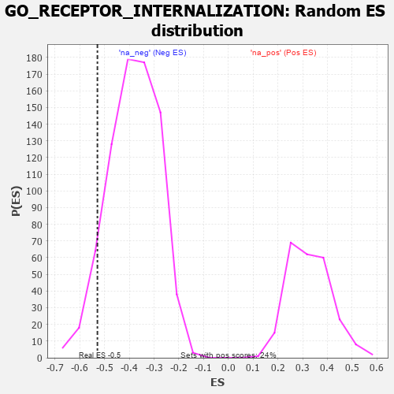

| | | Dataset | 7d |
| Phenotype | NoPhenotypeAvailable |
| Upregulated in class | na_neg |
| GeneSet | GO_RECEPTOR_INTERNALIZATION |
| Enrichment Score (ES) | -0.5289833 |
| Normalized Enrichment Score (NES) | -1.3829492 |
| Nominal p-value | 0.06842105 |
| FDR q-value | 0.36045438 |
| FWER p-Value | 1.0 |
Table: GSEA Results Summary
 Fig 1: Enrichment plot: GO_RECEPTOR_INTERNALIZATION
Fig 1: Enrichment plot: GO_RECEPTOR_INTERNALIZATION
Profile of the Running ES Score & Positions of GeneSet Members on the Rank Ordered List
| PROBE | GENE SYMBOL | GENE_TITLE | RANK IN GENE LIST | RANK METRIC SCORE | RUNNING ES | CORE ENRICHMENT | | 1 | LRP1 | | | 470 | 0.648 | -0.0222 | No |
| 2 | MX1 | | | 578 | 0.604 | -0.0012 | No |
| 3 | FMR1 | | | 1816 | 0.334 | -0.1378 | No |
| 4 | SYK | | | 2186 | 0.278 | -0.1684 | No |
| 5 | NUMB | | | 2519 | 0.224 | -0.1973 | No |
| 6 | MTMR2 | | | 3126 | 0.133 | -0.2660 | No |
| 7 | HTR1B | | | 3745 | 0.035 | -0.3418 | No |
| 8 | AP2B1 | | | 4185 | -0.039 | -0.3948 | No |
| 9 | DRD2 | | | 5088 | -0.221 | -0.4957 | No |
| 10 | PICK1 | | | 5265 | -0.263 | -0.5028 | Yes |
| 11 | MAGI2 | | | 5295 | -0.269 | -0.4911 | Yes |
| 12 | CD9 | | | 5319 | -0.277 | -0.4782 | Yes |
| 13 | DLG4 | | | 5388 | -0.293 | -0.4700 | Yes |
| 14 | CD63 | | | 5680 | -0.370 | -0.4855 | Yes |
| 15 | MX2 | | | 5745 | -0.390 | -0.4714 | Yes |
| 16 | INSR | | | 6204 | -0.538 | -0.4983 | Yes |
| 17 | FLOT1 | | | 6276 | -0.564 | -0.4751 | Yes |
| 18 | WDR54 | | | 6491 | -0.658 | -0.4645 | Yes |
| 19 | ARF1 | | | 6583 | -0.701 | -0.4359 | Yes |
| 20 | SCYL2 | | | 6621 | -0.724 | -0.3993 | Yes |
| 21 | RAB5A | | | 6655 | -0.741 | -0.3611 | Yes |
| 22 | AHI1 | | | 6860 | -0.848 | -0.3385 | Yes |
| 23 | GRIA1 | | | 7836 | -2.260 | -0.3322 | Yes |
| 24 | CAV3 | | | 7896 | -2.739 | -0.1834 | Yes |
| 25 | ARRB1 | | | 7935 | -3.377 | 0.0045 | Yes |
Table: GSEA details [plain text format]

Fig 2: GO_RECEPTOR_INTERNALIZATION: Random ES distribution
Gene set null distribution of ES for GO_RECEPTOR_INTERNALIZATION